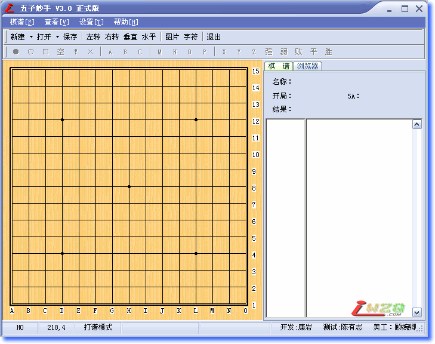

五子妙手3.0提前泄密版
#1 <font color="Gray">五子妙手3.0提前泄密版</font>作者：有志青年 发表时间：2007-10-14 10:58:14

软件名称：五子妙手 互动棋谱软件
软件版本：V3.0预览版
软件作者：康岩[小丸.net]
软件类型：免费软件(永久免费)
开发历史：
V3.0预览版
1.去除了冗余的ORC阅读功能，本站将开发专业的ORC阅读操作工具
2.去除了冗余的棋谱分析功能，该功能在网站提供
3.美化了界面，软件界面特邀上海知名女棋手顾婉卿四段制作;
4.支持打开IWZQ棋谱
5.兼容了iWZQ网站的棋谱
V2.5 正式版 新增功能
1.软件改名为：五子妙手 更新的新图标，更改了新界面
2.兼容iWZQ网站的风格界面
3.修改了不能打开网站打包棋谱的bug
4.增加手动阅读教室功能
5.棋盘可以无限缩放任何大小
6.支持导出POS,SGF格式文件
v2.5 BETA 1新增功能：
１．增加导出文字棋盘
２．增加棋盘旋转功能
３．修改了一些小错误
４．增加生成iWZQ代码
V2.1正式版
1、增强棋谱管理功能，用目录树结构替代现在的列表结构。
2、棋谱提供备份，载入功能；
３、支持打开边烽、联众棋谱
４、支持保存系统所有设置
v2.0 beta1
１、调整了界面
２、增加导出图形文字棋谱的功能
３、重新修改导出rena谱，使软件通用化
４、棋谱增加删除功能
５、增加了几个漂亮的皮肤
V2.0
１、代码全部重写、界面更美观
２、增加打开ORC游戏棋谱、并支持多文件打开
３、互动棋谱支持更新
４、随心所欲改变棋盘，棋子、坐标颜色，以不同的颜色输出棋谱
v1.6b2025
１、增加打开ＰＯＳ棋谱、并支持多文件打开
２、修改了数字显示的位置
３、互动棋谱刷新
４、互动棋谱增加自由打谱功能
５、支持导出rena互动棋谱功能、与网站整合
６、增加了安装程序、安装更方便
v1.5
１、打开ＱＱ棋谱、中游棋谱、并支持多文件打开
２、增加摆棋模式
３、增加测试模式
４、增加调试模式[内部版]
５、增加了互动棋谱浏览功能
v1.0
１、软件支持在线打谱
２、支持新建空白谱、数据库谱、图形谱
３、支持显示与非显示信息框
４、支持导出字串谱、数据库谱、图形谱
［此帖子已被 屏蔽 在 2011-10-21 18:39:43 编辑过］
#2 Re:五子妙手3.0正式版作者：小丸.net 发表时间：2007-10-14 16:17:16
软件的帮助菜单下有详细的软件使用帮助。
V3.0正式版新功能
1.增加了输出带详细资料的SGF（ORC）谱的功能。
2.增加了批量导入多种谱的功能
3.增加了批量导出POS,SGF谱的功能。
4.增强了棋谱类别管理的功能
5.在摆棋模式下可以像RENLIB那个按下CTRL键在盘面上输入字符的功能
6.增加了浏览器，与网站完全整合。
7.修正了棋谱的各项重要参数。
［ 五子飘 于 2011-10-21 18:29:41 时花20金币送鲜花一朵］
#3 Re:五子妙手3.0正式版作者：黄药师 发表时间：2007-10-14 21:46:13
丸子，里面应该注明，献给刚出生的女儿！#4 Re:五子妙手3.0提前泄密版作者：行云流水 发表时间：2007-10-16 8:52:12
祝贺#5 Re:五子妙手3.0提前泄密版作者：紫雨 发表时间：2007-10-18 19:04:26
果然厉害
#6 Re:五子妙手3.0提前泄密版作者：醉轩听雨 发表时间：2007-10-21 8:52:37
支持老大.#7 Re:五子妙手3.0提前泄密版作者：连珠初学 发表时间：2007-11-5 16:14:06
强人，是搞软件开发的？
#8 Re:五子妙手3.0提前泄密版作者：阿旺 发表时间：2007-12-4 15:01:56
支持下
不过在哪里可以下到???
#9 Re:五子妙手3.0提前泄密版作者：南京小飞机 发表时间：2008-7-20 10:01:59
丸子这么不发我一份啊 ?#10 Re:五子妙手3.0提前泄密版作者：宋杰 发表时间：2009-7-10 10:52:04
可惜下载不了了啊，郁闷。#11 Re:五子妙手3.0提前泄密版作者：像傻瓜一个的笨蛋 发表时间：2009-11-19 19:32:21
下载地址怎么打不开呢？？？
#12 Re:五子妙手3.0提前泄密版作者：luws 发表时间：2009-11-26 21:55:28
有手机版的五指棋谱吗

#13 Re:五子妙手3.0提前泄密版作者：猪猪快跑 发表时间：2009-12-4 3:42:22
为什么下不了了？
#14 Re:五子妙手3.0提前泄密版作者：晴天雨天 发表时间：2011-10-21 18:19:36
为什么下载不了？#15 Re:五子妙手3.0提前泄密版作者：五子飘 发表时间：2011-10-21 18:27:30

#16 Re:五子妙手3.0提前泄密版作者：屏蔽 发表时间：2011-10-21 18:33:33
坟，锁。